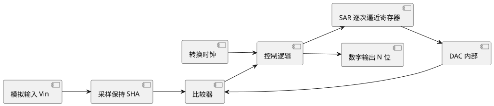
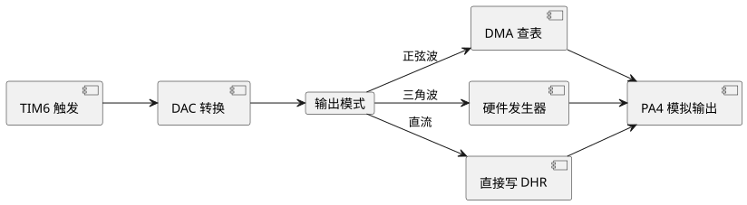

第 19 章 ADC 与 DAC
学习目标
- 理解 ADC（模数转换）与 DAC（数模转换）的工作原理及关键参数
- 掌握 STM32 内部 ADC 的 12 位分辨率、3 个独立 ADC、多通道扫描等特性
- 学会使用 STM32CubeMX 配置单通道采集、扫描模式、连续模式及 DMA 多通道采集
- 能够使用 HAL 库编写电位器采集与三通道 DMA 采集程序
- 掌握 ADC 校准、软件滤波及 DAC 正弦波/三角波输出方法
19.1 ADC 工作原理
模数转换器（Analog-to-Digital Converter，ADC）将连续的模拟电压信号转换为离散的数字量，是单片机与模拟世界交互的关键外设。与之相反，数模转换器（Digital-to-Analog Converter，DAC）将数字量转换为模拟电压输出。
ADC 的核心指标包括：
- 分辨率（Resolution）：输出数字量的位数，如 12 位 ADC 可输出 0~4095。
- 采样率（Sampling Rate）：每秒完成转换的次数，单位 sps 或 Hz。
- 参考电压（$V_{ref}$）：满量程对应的输入电压。
- 转换时间：完成一次转换所需时间，与采样率互为倒数。
- INL/DNL：积分/微分非线性，衡量转换精度。
19.1.1 逐次逼近型 ADC
STM32 内部 ADC 采用 逐次逼近型（Successive Approximation Register，SAR）结构，由比较器、DAC、逐次逼近寄存器与控制逻辑组成。每次转换从最高位开始，依次比较、决策，n 位 ADC 需要 n 个时钟周期完成转换。其优点是功耗低、速度适中、集成度高，适合单片机内部集成。

查看 PlantUML 源码
@startuml
skinparam defaultFontName "Microsoft YaHei"
skinparam backgroundColor #ffffff
left to right direction
component "模拟输入 Vin" as A
component "采样保持 SHA" as B
component "比较器" as C
component "SAR 逐次逼近寄存器" as D
component "DAC 内部" as E
component "控制逻辑" as F
component "数字输出 N 位" as G
component "转换时钟" as H
A --> B
B --> C
D --> E
E --> C
C --> F
F --> D
F --> G
H --> F
@enduml19.1.2 采样保持电路
采样保持电路（Sample and Hold，S/H）在转换开始时对输入电压进行采样并保持稳定，避免转换过程中输入信号变化导致结果错误。STM32 内置可编程采样时间（Sampling Time），范围为 3~480 个 ADC 时钟周期，可根据信号源内阻调整。
19.2 STM32F407 ADC 特性
STM32F407ZGT6/VET6 内置 3 个独立的 12 位 ADC（ADC1/ADC2/ADC3），最高采样率 2.4 MSPS，共用 16 个外部输入通道（具体可用通道数取决于封装）。其主要特性如下表所示。
| 特性 | 参数 | 说明 |
|---|---|---|
| 分辨率 | 12 位 / 10 位 / 8 位 / 6 位 可选 | 位数越低转换越快 |
| 转换模式 | 单次 / 连续 / 扫描 / 间断 | 支持规则组与注入组 |
| 采样时间 | 3/15/28/56/84/112/144/480 周期 | 每通道独立配置 |
| 外部触发 | 定时器 TRGO / EXTI | 支持硬件触发 |
| DMA 请求 | 规则组结束后自动触发 | 多通道扫描必备 |
| 双重/三重模式 | regular simultaneous / interleaved | 多 ADC 同步采样 |
| 温度传感器 | ADC1_IN16 | 内部芯片温度 |
| 参考电压通道 | ADC1_IN17 (VREFINT) | 1.21V 基准 |
| VBAT 监控 | ADC1_IN18 | 电池电压 /4 后采样 |
19.2.1 分辨率与电压换算公式
对于 n 位 ADC，参考电压为 $V_{ref}$，数字量 $D$ 对应的输入电压为：
$$V_{in} = \frac{D \cdot V_{ref}}{2^n - 1}$$
当 STM32F407 使用 12 位分辨率、$V_{ref}=3.3\text{V}$ 时，1 LSB 对应电压为：
$$\text{LSB} = \frac{3.3\text{V}}{2^{12}-1} = \frac{3.3}{4095} \approx 0.806\text{mV}$$
19.3 CubeMX 配置 ADC
STM32CubeMX 提供图形化的 ADC 配置界面，常见配置步骤如下：
19.3.1 单通道采集配置
- 在 Pinout 中将 PA0 配置为
ADC1_IN0。 - 进入 ADC1 配置页，勾选 IN0，设置 Continuous Conversion Mode = Disable（单次模式）。
- 设置 Scan Conversion Mode = Disable（单通道）。
- 设置 Sampling Time 为 56 Cycles，时钟分频为 PCLK2/4 = 21MHz。
- 在 NVIC Settings 中按需启用 ADC 中断。
- 生成代码后在
MX_ADC1_Init()中查看初始化结果。
19.3.2 多通道扫描 + DMA 配置
- 在 ADC1 中勾选 IN0/IN1/IN2 三个通道，按采样顺序排列。
- 设置 Scan Conversion Mode = Enable，Continuous Conversion Mode = Enable。
- 设置 Number Of Conversion = 3，每个 Rank 配置对应通道与采样时间。
- 在 DMA Settings 中点击 Add，选择 ADC1，模式为 Circular，数据宽度 Word（32 位，因 DR 寄存器为 32 位）。
- 生成代码后将自动调用
HAL_ADC_Start_DMA()。
19.4 单通道采集
以下示例使用 ADC1 通道 0（PA0）采集电位器分压，将 12 位原始值转换为电压并在串口输出。
/* main.c - ADC 单通道采集示例 */
#include "main.h"
#include <stdio.h>
ADC_HandleTypeDef hadc1;
UART_HandleTypeDef huart1;
/* 电压换算：12 位，Vref = 3.3V */
#define VREF 3.3f
#define ADC_RESOL 4095.0f
static float adc_to_voltage(uint32_t raw)
{
return (float)raw * VREF / ADC_RESOL;
}
int main(void)
{
HAL_Init();
SystemClock_Config();
MX_GPIO_Init();
MX_USART1_UART_Init();
MX_ADC1_Init(); /* CubeMX 生成 */
char buf[64];
uint32_t raw;
float voltage;
while (1) {
/* 1. 启动 ADC */
HAL_ADC_Start(&hadc1);
/* 2. 轮询等待转换完成，超时 100ms */
if (HAL_ADC_PollForConversion(&hadc1, 100) == HAL_OK) {
raw = HAL_ADC_GetValue(&hadc1);
voltage = adc_to_voltage(raw);
snprintf(buf, sizeof(buf),
"ADC RAW=%4lu, V=%.3f V\r\n",
(unsigned long)raw, voltage);
HAL_UART_Transmit(&huart1, (uint8_t*)buf, strlen(buf), 100);
}
HAL_ADC_Stop(&hadc1);
HAL_Delay(200);
}
}HAL_ADCEx_Calibration_Start(&hadc1, ADC_SINGLE_ENDED) 进行自校准，可消除偏移误差。
19.5 DMA 多通道采集
多通道扫描必须配合 DMA，否则每次转换完成后只会保留最后一个通道的值。以下示例同时采集 PA0/PA1/PA2 三路模拟信号。
/* main.c - ADC + DMA 三通道采集 */
#include "main.h"
ADC_HandleTypeDef hadc1;
DMA_HandleTypeDef hdma_adc1;
#define ADC_CHANNELS 3
static uint16_t adc_dma_buf[ADC_CHANNELS]; /* DMA 目标缓冲区 */
int main(void)
{
HAL_Init();
SystemClock_Config();
MX_GPIO_Init();
MX_DMA_Init();
MX_ADC1_Init();
MX_USART1_UART_Init();
/* 自校准 */
HAL_ADCEx_Calibration_Start(&hadc1, ADC_SINGLE_ENDED);
/* 启动 DMA 转换：缓冲区首地址、长度 3 */
HAL_ADC_Start_DMA(&hadc1,
(uint32_t*)adc_dma_buf,
ADC_CHANNELS);
while (1) {
/* DMA 自动循环填充 adc_dma_buf[]，
主循环只读取即可 */
float v0 = adc_dma_buf[0] * 3.3f / 4095.0f;
float v1 = adc_dma_buf[1] * 3.3f / 4095.0f;
float v2 = adc_dma_buf[2] * 3.3f / 4095.0f;
printf("CH0=%.2fV CH1=%.2fV CH2=%.2fV\r\n", v0, v1, v2);
HAL_Delay(100);
}
}
/* 转换完成回调（HAL 库弱定义，需要重写） */
void HAL_ADC_ConvCpltCallback(ADC_HandleTypeDef* hadc)
{
if (hadc->Instance == ADC1) {
/* 可在此处理一组数据完成事件 */
}
}19.6 ADC 校准与噪声抑制
19.6.1 自校准
STM32 ADC 内部具有校准电路，可消除 ADC 的偏移误差。在每次上电或温度变化较大时建议执行一次校准。HAL 库提供 HAL_ADCEx_Calibration_Start()，调用前需先确保 ADC 处于关闭状态。
19.6.2 软件滤波
实际采样中由于电源纹波、布线干扰等，原始数据会有抖动。常用软件滤波算法包括：
| 算法 | 原理 | 优缺点 |
|---|---|---|
| 算术平均滤波 | 取 N 次采样均值 | 简单平滑，对突发噪声抑制差 |
| 中值滤波 | 取 N 次采样的中位数 | 抗突发尖峰，但延迟大 |
| 滑动平均滤波 | FIFO 队列滑动求均 | 实时性较好 |
| 一阶 IIR 滤波 | $y_n = \alpha x_n + (1-\alpha) y_{n-1}$ | 计算量极小，α 可调 |
| 限幅滤波 | 新值与上次差值超过阈值则丢弃 | 抑制尖峰 |
/* 中值滤波：取 5 次采样的中位数 */
static uint16_t adc_median_filter(ADC_HandleTypeDef *hadc, int n)
{
uint16_t buf[5];
int i, j;
uint16_t tmp;
for (i = 0; i < 5; i++) {
HAL_ADC_Start(hadc);
HAL_ADC_PollForConversion(hadc, 10);
buf[i] = HAL_ADC_GetValue(hadc);
HAL_ADC_Stop(hadc);
}
/* 冒泡排序 */
for (i = 0; i < 4; i++)
for (j = 0; j < 4 - i; j++)
if (buf[j] > buf[j+1]) {
tmp = buf[j];
buf[j] = buf[j+1];
buf[j+1] = tmp;
}
return buf[2]; /* 中位数 */
}19.7 DAC 输出
STM32F407 内置 2 路 12 位 DAC（DAC1_OUT1=PA4，DAC1_OUT2=PA5），可输出 0~$V_{ref}$ 模拟电压。配合 DMA 与定时器触发，可输出正弦波、三角波、方波等任意波形。
19.7.1 DAC 输出电压公式
$$V_{out} = \frac{D \cdot V_{ref}}{4095}$$
当 $V_{ref}=3.3\text{V}$ 时，1 LSB ≈ 0.806mV。
19.7.2 输出正弦波
以下示例使用 DAC1_OUT1 配合 TIM6 触发 + DMA 输出 1kHz 正弦波。
/* main.c - DAC 输出正弦波 */
#include "main.h"
#include <math.h>
#define SINE_POINTS 64
DAC_HandleTypeDef hdac;
TIM_HandleTypeDef htim6;
DMA_HandleTypeDef hdma_dac1;
static uint16_t sine_table[SINE_POINTS];
/* 预先计算正弦表 */
static void sine_table_init(void)
{
int i;
for (i = 0; i < SINE_POINTS; i++) {
/* 0~4095 范围，offset = 2048，幅度 2047 */
sine_table[i] = (uint16_t)(2048.0f
+ 2047.0f * sinf(2.0f * M_PI * i / SINE_POINTS));
}
}
int main(void)
{
HAL_Init();
SystemClock_Config();
MX_GPIO_Init();
MX_DMA_Init();
MX_DAC_Init();
MX_TIM6_Init(); /* 配置为触发 DAC，例如 1kHz × 64 = 64kHz */
sine_table_init();
/* 启动 DAC，使用 DMA 输出 */
HAL_DAC_Start(&hdac, DAC_CHANNEL_1);
HAL_DAC_Start_DMA(&hdac, DAC_CHANNEL_1,
(uint32_t*)sine_table,
SINE_POINTS,
DAC_ALIGN_12B_R);
/* 启动定时器触发 */
HAL_TIM_Base_Start(&htim6);
while (1) {
/* DAC + DMA + TIM 自动循环输出正弦波 */
HAL_Delay(1000);
}
}19.7.3 三角波输出
DAC 内部硬件支持 三角波发生器（Triangle Wave Generator），无需软件查表，配置 DAC_TRIANGLEAMPLITUDE 与触发频率即可。HAL 库通过 HAL_DACEx_TriangleWaveGenerate() 调用。
/* 启用 DAC 内部三角波发生器 */
HAL_DACEx_TriangleWaveGenerate(&hdac,
DAC_CHANNEL_1,
DAC_TRIANGLEAMPLITUDE_2047);
HAL_DAC_Start(&hdac, DAC_CHANNEL_1);
/* 每次触发 DAC->DOR 自动递增/递减 */
HAL_TIM_Base_Start(&htim6);
查看 PlantUML 源码
@startuml
skinparam defaultFontName "Microsoft YaHei"
skinparam backgroundColor #ffffff
left to right direction
component "TIM6 触发" as A
component "DAC 转换" as B
card "输出模式" as C
component "DMA 查表" as D
component "硬件发生器" as E
component "直接写 DHR" as F
component "PA4 模拟输出" as G
A --> B
B --> C
C --> D : 正弦波
C --> E : 三角波
C --> F : 直流
D --> G
E --> G
F --> G
@enduml本章小结
- ADC 将模拟电压转换为数字量，DAC 将数字量转换为模拟电压，是单片机与模拟世界交互的核心外设。
- STM32F407 内置 3 个 12 位 SAR 型 ADC，最高 2.4 MSPS，分辨率公式 $V_{in} = D \cdot V_{ref} / (2^n - 1)$。
- 单通道采集使用轮询模式即可，多通道扫描必须配合 DMA，否则会丢失数据。
- 每次上电或温度变化较大时应执行自校准，消除偏移误差。
- 软件滤波（均值/中值/IIR）可显著抑制噪声，应根据噪声特性选择合适算法。
- DAC 输出正弦波可使用 DMA 查表，输出三角波可直接使用硬件发生器，输出阻抗较高时需加运放缓冲。
思考题与习题
- 简述逐次逼近型 ADC 的工作原理，并说明为什么 STM32 选用了这种结构。
- STM32 的 ADC 在 12 位分辨率下 1 LSB 对应多少毫伏？若希望提高分辨率可采取哪些方法？
- 多通道扫描时如果不使用 DMA 会出现什么问题？为什么？
- 编写程序：使用 ADC1 通道 5 采集光敏电阻电压，并根据电压阈值控制 LED 亮灭。
- 使用 DAC1 输出频率可调的方波，要求占空比 50%，频率范围 100Hz~10kHz。
- 对比算术平均滤波、中值滤波、一阶 IIR 滤波的特点，并设计实验验证哪种对突发尖峰噪声抑制效果最好。
参考文献
- ST 官方. STM32F405/415/407/417 参考手册 RM0090 [Z]. 2024. https://www.st.com/
- ST 官方. STM32F4xx HAL 库用户手册 UM1725 [Z]. 2024.
- 张毅刚. 单片机原理及应用——C51 编程 + Proteus 仿真（第 4 版）[M]. 北京：高等教育出版社, 2021.
- 正点原子. STM32F4 开发指南——HAL 库版本 [M]. 北京：北京航空航天大学出版社, 2020.
- Joseph Yiu. The Definitive Guide to ARM Cortex-M3 and Cortex-M4 Processors (3rd Edition) [M]. Newnes, 2013.